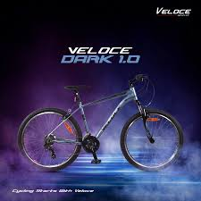
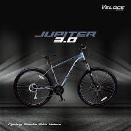
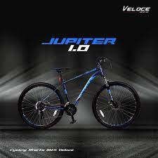

Product 1 The Veloce Dark 1.0 often features a lightweight aluminum frame, which offers a good balance between durability and weight, making it easy to handle and maneuverIt may be equipped with a Shimano or similar quality gearing system, providing a range of gears that can handle flat roads and challenging climbs with ease. This makes it an excellent choice for both city commutes and off-road trails.The bike typically comes with disc brakes, ensuring effective stopping power under various weather conditions, which is essential for safety, particularly in wet or muddy conditions. The tires of the Veloce Dark 1.0 are usually designed for multi-surface riding, offering good grip and puncture resistance. This makes it suitable for both paved roads and gravel paths.
Product 2 Bicycles like the Jupiter 3.0 usually feature an advanced alloy or carbon fiber frame that offers a lightweight yet sturdy build. The choice between alloy and carbon fiber typically affects the bike's weight, rigidity, and vibration absorption qualities.It might come equipped with a high-performance drivetrain, possibly including mid to high-range components from manufacturers like Shimano or SRAM. These components can offer smooth shifting, a wide range of gears, and reliability for both climbing and speedy descents.Disc brakes are standard in this class, providing superior stopping power in diverse weather conditions, which is crucial for safety and effective braking on steep or slippery terrain. Depending on whether it's aimed at road or off-road cycling, the Jupiter 3.0 could feature a suspension fork (and possibly rear suspension) to handle bumps and improve control on rough surfaces.
Product 3